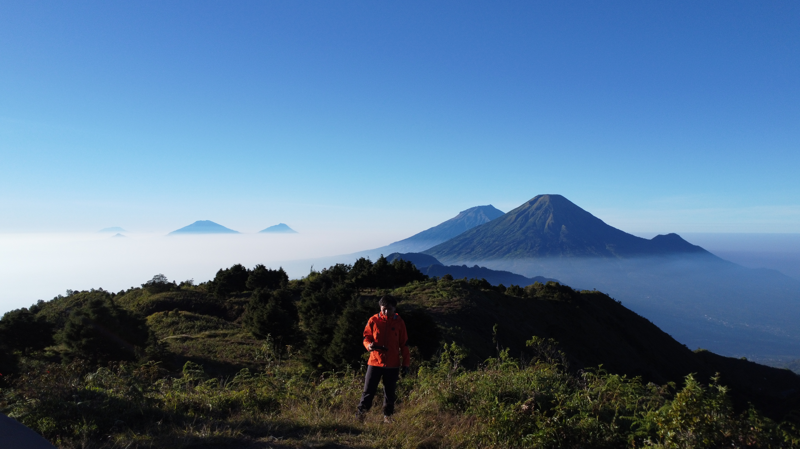
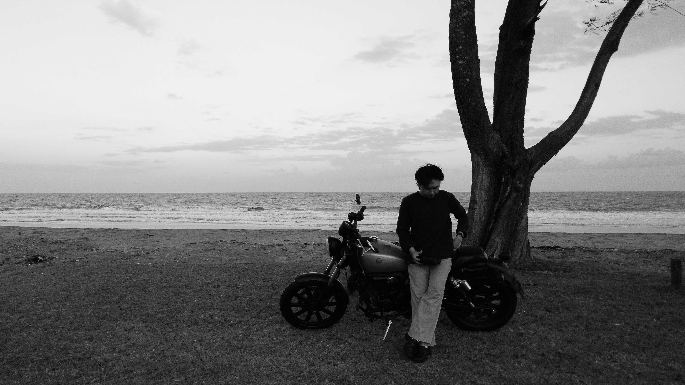

HENDI HESA MAHENDRA
Works
About
A SMALL
ARCHIVE
OF
BEING.
Merekam perjalanan.
Menyimpan kenangan.
Meninggalkan jejak.
Welcome
Scroll to explore ↓
Works
Selected writings
01
Saliyah Layu Melulu
Poetry Collection
02
Kita di Antara Kata
Poetry Collection
03
Kesepian Modern
Essay · Reflection
04
Kalau Nanti Jatuh Cinta Lagi
Notes · Reflection
05
Kerja, Belajar, dan Tumbuh
Notes · Growth
06
Tentang Pengabdian Masyarakat
Notes · Society
07
Manajemen Keuangan Kecil-Kecilan
Notes · Personal Finance

"We make a living by what we get,
but we make a life by what we give."
Field Note · 2026
Somewhere along the way

About This Place
A place for things written, remembered, questioned, and left behind along the way.